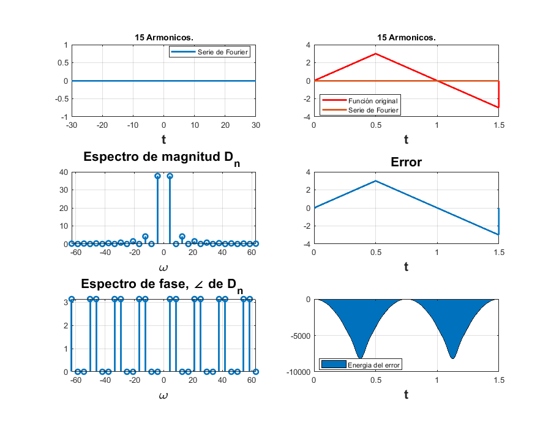

practica 5. Series de Fourir en tiempo continuo.
Autor. Alvarado Angeles Francisco Javier.
Grupo: 2MV1.
Contents
Objetivos.
*Realizar gráficas de series de Fourier exponenciales y trigonométricas en tiempo continuo *Manipulación de instrucciones en MATLAB *Calculo númerico de los coeficientes de Fourier
Introducción
Los Dn se pueden encontrar usando la transformada de Fourier en tiempo discreto, en donde reciclan un cierto intervalo de una señal periódica alrededor de un periodo. Suponiendo que nuestro intervalo de muestreo lo representamos por una , nuestro número de muestras en un periodo esta representado por , nuestra relación entre nuestros y nuestra función original esta dada por la siguiente ecuación.
Donde x(KT) representa la K-esima muestra de x(t). En la practica, es imposible hacer a en la ecuación (a), lo podemos hacer tan pequeño como querramos pero nunca igual a cero, de echo esa es la definición del límite sino sería una evaluación y no un límite.
Desarrollo.
Ejemplo 6.1
d0 = 0.504; dn = @(n) ((0.504)*(1-4*n*j))/(1+16*n.^2); t0 = 0; tf = pi; f = @(t) exp(-t/2); armo = 4; a = -7; b = 7; an= @(n) 0.504*(2/(1+16*n.^2)); bn= @(n) 0.504*(8*n/1+16*n.^2); a0= 0.504; sfc(t0,tf,bn,an,a0,f,armo,a,b) sfc11(t0,tf,dn,d0,f,15,a,b)

Ejemplo 6.2
d0 = 0; dn = @(n) -(12/n.^2*pi)*(sin(n.*pi/2)); t0 = -0,5; tf = 1.5; f = @(t) (6*t).*(abs(t)<=0.5)+6*(1-t).*(0.5<t & t<1.5); armo = 4; a = -30; b = 30;
t0 =
0
sfc21(t0,tf,dn,d0,f,armo,a,b) sfc22(t0,tf,dn,d0,f,15,a,b)
Warning: Imaginary parts of complex X and/or Y arguments ignored Warning: Imaginary parts of complex X and/or Y arguments ignored Warning: Imaginary parts of complex X and/or Y arguments ignored Warning: Using only the real component of complex data. Warning: Imaginary parts of complex X and/or Y arguments ignored Warning: Imaginary parts of complex X and/or Y arguments ignored Warning: Imaginary parts of complex X and/or Y arguments ignored Warning: Using only the real component of complex data.
Ejemplo 6.4
t0 = -pi; tf = pi; d0 = 0.5; dn = @(n) (1/(n.*pi))*sin(n*pi/2); f = @(t) (1)*(-pi/2<=t & t<=pi/2); armo = 4; a = -5*pi; b= 5*pi;
sfc31(t0,tf,dn,d0,f,armo,a,b) sfc32(t0,tf,dn,d0,f,15,a,b)
Ejemplo 6.5
t0=0; tf=pi; d0=0.504; dn= @(n) 0.504/(1+n*j*4); f=@(t) exp(-t/2); armo=4; a=-3*pi; b=3*pi;
sfc41(t0,tf,dn,d0,f,armo,a,b) sfc42(t0,tf,dn,d0,f,15,a,b)
Ejemplo 6.7
t0=-1.5; tf=1.5; d0=1/3; dn=@(n) 1/3; f=@(t) dirac(t); armo=4; a=-7.5; b=7.5;
sfc51(t0,tf,dn,d0,f,armo,a,b)
%sfc52(t0,tf,dn,d0,f,15,a,b)